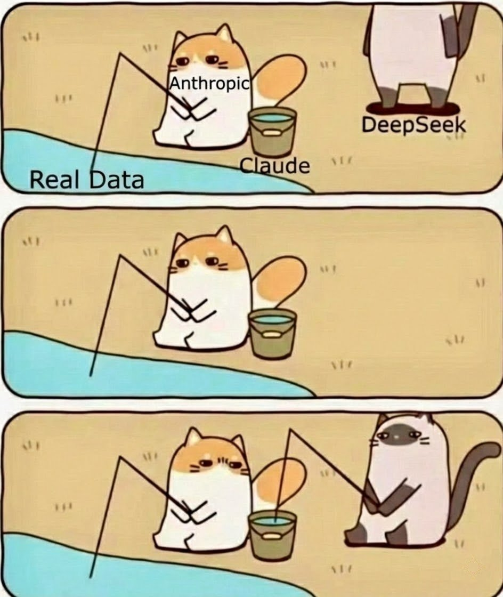
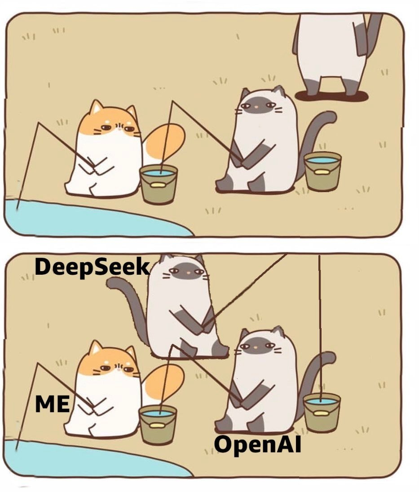

我对A÷的第一印象：自鸣得意、道貌岸然、虚伪做作。
Anthropic靠全球Claude用户的真实交互训练赚大钱，却不准别人用输出数据蒸馏。不仅一直闭源私有，ToS还明文禁止「用Claude开发竞争产品或服务」，甚至能Request精准定位到用户进行封号。
正因为DeepSeek、Moonshot、MiniMax都是中国的开源模型厂商，才会被扣上「不尊重西方知识产权」的帽子。试问你的数据集都不是自己产出的，谈何版权？
得益于开源，每个人都能私有化部署，而不是被Anthropic、OpenAI几家巨头锁死。
A÷要庆幸还有国人用Claude，要没有这些人用，Claude也不会被蒸。
这些中国用户订阅Max Plan后被封号，不仅要写小作文才能（部分）退款，最后无奈将目光投向那些API中转站。
不少厂商私底下组建号池，向大家提供低价、免费的API中转站却背地里拿用户对话记录来训练，我想各有所得。
你偷用户数据，卖你的API；我偷用户隐私，骗我的投资人；何必闹得如此不愉快呢~

Anthropic靠全球Claude用户的真实交互训练赚大钱，却不准别人用输出数据蒸馏。不仅一直闭源私有，ToS还明文禁止「用Claude开发竞争产品或服务」，甚至能Request精准定位到用户进行封号。
正因为DeepSeek、Moonshot、MiniMax都是中国的开源模型厂商，才会被扣上「不尊重西方知识产权」的帽子。试问你的数据集都不是自己产出的，谈何版权？
得益于开源，每个人都能私有化部署，而不是被Anthropic、OpenAI几家巨头锁死。
A÷要庆幸还有国人用Claude，要没有这些人用，Claude也不会被蒸。
这些中国用户订阅Max Plan后被封号，不仅要写小作文才能（部分）退款，最后无奈将目光投向那些API中转站。
不少厂商私底下组建号池，向大家提供低价、免费的API中转站却背地里拿用户对话记录来训练，我想各有所得。
你偷用户数据，卖你的API；我偷用户隐私，骗我的投资人；何必闹得如此不愉快呢~


We’ve identified industrial-scale distillation attacks on our models by DeepSeek, Moonshot AI, and MiniMax.
These labs created over 24,000 fraudulent accounts and generated over 16 million exchanges with Claude, extracting its capabilities to train and improve their own models.
These labs created over 24,000 fraudulent accounts and generated over 16 million exchanges with Claude, extracting its capabilities to train and improve their own models.